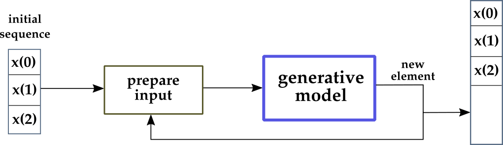
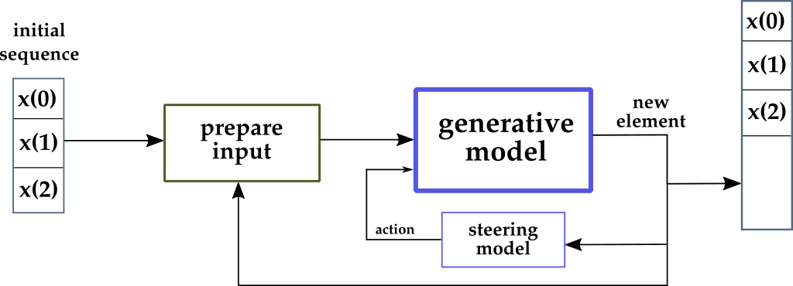
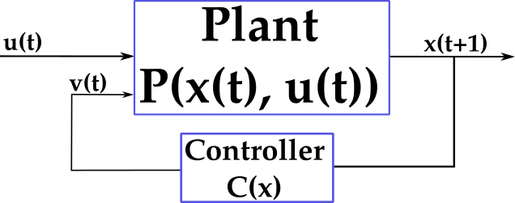
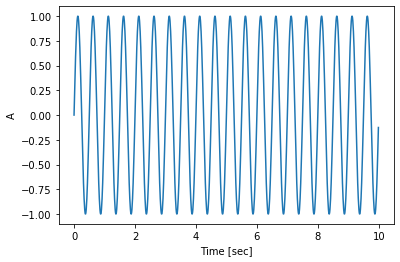
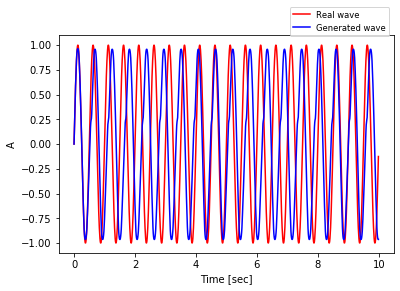
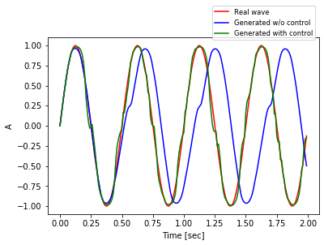
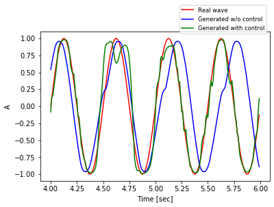
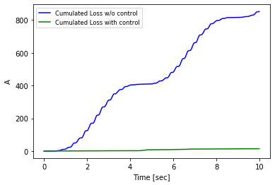

This article tells my research that took off after reading some recent research papers on Plug & Play Generative models.
Generative Deep Network Models can be powerful: they are trained to take a (small) sequence of data in input and to predict what the next element of the sequence should be.
The most famous applications of such models are in Natural Language Processing (NLP). When given a sequence of words, Generative Networks can predict the next word. The end result is the generation of a whole text. The fantastic part of the story is that, in recent years, researchers at Google, OpenAI, Uber, have built models (BERT, GPT-2) with incredible generative skills. The text they generate is getting closer and closer to a human-generated text!
In this exciting field, Plug & Play models are really interesting and appealing. Be sure to check the experimental section at the end of this article.
Plug & Play Generative Models
The fascinating point of Plug & Play Models (PPM) is that they answer a very basic question:
In a generative model, can we improve the generation online, that is, while it is undergoing?
Let’s first think about the classic generative models scheme, and then compare it to PPM. In a “normal” generative model:
- The model is trained once, on a huge dataset. Validation and test are also done, of course. Training happens “offline”, that is, before the actual generation begins.
- In a real application, the trained model is used by feeding the beginning of a sequence (e.g., a sentence) and getting the predicted next sequence element (e.g., the predicted next word).
- Step 2 is repeated in loop. The predicted element is appended to the sequence. The augmented sequence is given as input to the model and a new predicted element is returned by the model.
- At the end of the generation loop, a long sequence has been generated by the model. Furthermore, the model was not modified during the generation.

In the figure above, the generation loop is at the center of the diagram. At each time step, the newly generated element (current output of the network) is appended to the final sequence, and is also used as part of the input to generate the next element.
Let’s look more into the details.
Initially, the first 3 elements of the sequence are given: $x(0)$, $x(1)$, $x(2)$. Using them, the network predicts a new element, say $x(3)$.
Thus, $x(3)$ will be part of the final sequence (so far composed of $x(0)$, $x(1)$, $x(2)$, $x(3)$), and will also be part of the new input.
Since most deep networks have a fixed size for the input, in this example 3, a “shifting-window” operation is needed, and at the next step the input will be prepared as $x(1)$, $x(2)$, $x(3)$, and the new element will be $x(4)$. Note that $x(0)$ isn’t part of the input anymore.
This process is repeated a number of times based on the desired length of the final sequence. The key point in the context of this article is that the network model is not modified during generation.
What would happen if we modified the model online? Again, “online” means during generation.

In this scenario, the last element generated by the network is used in three ways:
- As part of the input to generate the next element, like in the previous case.
- As part of the final sequence, again like in the previous case.
- As a variable to compute an “action” that changes the model itself. This is totally in contrast with the first approach (and with the whole deep learning theory, I’d argue).
The goal of the “action” computed online is effectively to steer the model towards different directions, more promising for the generative task at hand. This is, by all means, an example of control of a dynamic system.
Control of Dynamic Systems
Control Engineering is a much older discipline than Deep Learning. It’s a very mathy subject, much mathy-ier than Machine Learning: it’s basically all about convergence of differential equations.
In fact, funnily enough, Control Systems Engineering was my M.Sc. subject, hence my disbelief when I saw the Plug & Play papers published.

In Control Systems, at each time step:
- A system, or plant, has an external, uncontrollable input $u(t)$.
- The system evolves based on its current internal state $x(t)$ and on the input, and moves into a new state $x(t+1)$.
- Analysis of the internal dynamics (in stationary control), or predictions about the future states (in predictive control), allow to design a Controller system. The goal of the Controller is to generate a new input $v(t)$ for the system, based on the current state $x(t)$. This is called the controllable input.
Overall, the objective of Control Engineering is to move the system into a desired state $x(t)$.
The science of control systems is truly ubiquitous. It goes under other names too, such as Automation Engineering, or Mechatronics Engineering. Very, very famous application of it are:
- Cruise control.
- ABS (vehicles’ braking system).
- Automatic pilots (trains, airplanes, cars, trucks).
Even the refrigerator and the washing machine in your house work thanks to some (basic) control system theory.
I am sure you have already understood how close is the standard Control Systems framework to the Plug and Play Generative Networks idea.
A word of caution
Purists of control theory (a group I consider myself part of, partially) are already screaming as they see where this article is going, I bet.
The network will be so utterly unstable!!
Stability is a very important concept in control theory. Your refrigerator must operate as to reach a stable temperature point, stay there for a little while, and then actionate its cooling engine only when the temperature drops a bit, to bring it back to the stable point.
If the cooling engine was always on, or if it was turning on and off at high frequency, it would break soon. This is an example of an unstable system.
Instability can be very dangerous. If you are building an automatic airplane pilot, and to get up to some altitude you fire the engine too hard and they break, you might kill people. In general, mechanical systems need stability to operate safely.
Luckily for us, neural network do not make any assumption of stability when they are used. There is however a concept of stability in the optimization procedure (e.g., gradient descent), which is supposed to converge to a local minimum. In truth that doesn’t always happen. If you train for too few epochs, or if the dataset is really, really not-convex, then maybe your gradient descent never converges.
Bearing that in mind, my word of caution is the following. If you modify a generative model online you might break the optimization procedure that was done during offline training, and get quite far from the optimum point found during training.
The real question is: do we care at all?
After all, practical deep networks are all about accuracy evaluation on a test set. Even researchers are mostly concerned with showing evaluation of their models on public datasets and compare those results with state of the art models. That’s it.
Nonetheless, I think the remark on stability is something very important to keep in mind, because it may actually be very important for some specific application.
Benefits of Plug and Play models
The first benefit I see with PPMs is that they are computationally cheap.
The idea is to take one of the largest models available off the shelf and steer it online. Obviously this is much cheaper than training your own model, which would require massive power and a lot of money (estimates for the most famous models are $60,000!!).
Additionally, PPMs are much cheaper than standard fine-tuning procedures.
When you fine-tune a large model, you still have to run some expensive, and time consuming, optimization on a few of the final layers of the large model. Large GPUs and a good wallet are needed.
On the other hand, PPMs are cheap because:
- We load the original, large model as-it-is. And we use its generative power. In other words, we just call
model.predict(inputs). - We design a much, much smaller system, that will be the steering model (aka, controller). This can even be a simple algebraic (or differential) formula, in which case it would be very, very efficient.
- We steer the larger model by using the smaller one. There are a few options about how to do this. For example, we could change the weights on some layer, or change the activations. I’ll discuss a practical example in the next sections.
There’s no re-training to do, unless your steering model is also a deep network (but keep it cheap!). There’s no expensive data collection to do. There’s no crazy-expensive GPU to be paid.
Experiments
I really wanted to complement this article with an example of how to use the PPM idea, but I also wanted to keep it as simple as possible.
If you take a paper that uses a PPM with good results on a complex problem, for instance text generation, the complexity of the task will bury down the essence of PPM and how it works.
Thus, I designed a simple experiment where important concepts would really stand out and where reading and understanding the code is very simple. On the other hand, the scenario might seem overly simplified and a bit unrealistic, please bear with it if that’s your impression.
As additional resources, I released the code for these experiments on GitHub and in a notebook.
Let’s get started. Do you remember the sinusoidal wave? It’s used all over the place in digital sound (as well as mathematics, of course). Its shape is characterized by the frequency (number of high-peaks in each second) and amplitude (intensity of such peaks).
Here’s a sine wave with 2 cycles per second (frequency) and amplitude equals to 1, sampled for 10 seconds with 100 samples per second.

The figure above shows a “real” sinusoidal. I generated it explicitly by writing code that computes $sin(t)$ at each sampled step $t$. In fact, I used numpy for this task.
Let’s assume that we want to generate a sinusoidal wave with a deep network. That might sound really too simple, but actually it’s not. The sine wave is a transcendental function, which means to generate it cannot express in terms of a finite sequence of algebraic operations (addition, multiplication, and root extraction). That said, to generate a sampled sine is a very doable task.
In particular, let’s say we want a model that takes 10 samples from a $sin(t)$ and it predicts the next element.
How does it work?
- Take the real wave. Remember we have 1000 time steps in that, for $t=0, \dots ,999$.
- Build windows of length 11, in a moving fashion from t=0 until the end. For example, the first window is for $t=0, \dots,10$. The second is for $t=1, \dots ,11$. The third for $t=2, \dots ,12$, and so on.
- Each of this window will be further divided into two parts. The first 10 elements will be the training sample and then 11th (and last) will be the expected result, the one the model has to learn from, via backpropagation.
As this is a sequence task, you might want to use a sequence model, like RNN and such. However, I used a very simple densely connected model. With this simpler model I can show more effectively where the steering action is applied.
To test this model, let’s assume for a moment that we don’t know the real wave anymore. We only know the first 10 elements of it.
Feed these 10 elements into the trained model, with model.predict(inputs) or just model(inputs) in tensorflow 2.
The model will give you the predicted 11th element. Append that to the first 10 you already had, take the last 10 in the new sequence (hence, from the 2nd to the 11th) and call again the model on them. You’ll get the 12th (predicted) element. Repeat this until you have a whole new sequence of 1000 elements.
Now you can compare the predicted sequence with the real one.

The generated wave is somehow off. It’s not too bad, but it seems as if the model gets confused periodically and has a bias, and loses one cycle every 5 seconds. The reason is probably that the simple model can’t approximate well enough a transcendental function like $sin(t)$. More specifically, some oscillation in the wave leads the model to generate elements that are just very slightly off, but when they accumulate, the error grows.
Now we could throw in a few deeper layers, with hundreds of units, train again and for a longer time (as the model is more complex) and see what happens.
Let’s try PPMs instead!
Every time we call model(inputs), we append the result to the current sequence, that will also be part of the inputs for the next generation. This is exactly like before.
In addition to that, this time we will also compute a steering action using a super efficient steering model and apply it to the original model.
How does that work exactly?
- The steering model uses simple differential equations. It computes the gradients of the loss of the currently predicted value against the real value.
- The gradient is computed only with respect to the weights of the last layer of the network.
- The gradient of the loss is then applied onto the same layer’s weights in a gradient-descent fashion: with a learning step alpha of 0.05 that worked well in practice and with a normalization term equal to its euclidean norm.
These are a lot of details, and the next section will elaborate them in details. But first, let’s look at the resulting wave.

Only one figure with all 1000 sampled steps is quite messy, hence the figure above shows only the first 200 ($t=0$ to $t=199$).
It’s very clear that the wave generated with control (green line) is much more nervous than the one without (blue line), due to the steering action that takes place at each time step. On the other hand, it’s impressive how closely it’s capable of following the real wave (red line).
In some part of the simulations the results are less impressive. For example, here’s the same data plotted on a different 200-steps interval, from $t=400$ to $t=599$.

Overall, it seems like the wave generated with control is much better. In some part of the time horizon is not that clear, for example in the figure above around the second peak.
It’s good practice to come up with a single metric to compare complex functions. In this case, it’s natural to choose the actual loss in the two cases. I computed the sum of the squared errors, with the numpy.cusum function. And here is the inequivocabile result.

The loss with control is not actually zero, but it looks as if it was zero when compared on the same scale with the loss of the model without control. Keep in mind that the errors are squared and accumulated over time. Impressive.
Technical Details
In this final section I will discuss in real depth the technical details of the experiments, both from implementation and mathematical point of view.
First of all: I like reproducible research. In the code you will see that the experiment start off by setting the seed for random generation both in Numpy and Tensorflow.
What about the base model? In the theoretical discussion (in the first 3 three sections), I spoke about a large, powerful, generative model. But I also said that with such large models it’s difficult to grasp the details of plug and play.
In this experiment I built a very simple, 3-layers model with only Dense layers.
inpTensor = tf.keras.Input(shape=10) # x(t), x(t-1), ..., x(t-9)
hidden1 = tf.keras.layers.Dense(
units=64,
activation='relu')(inpTensor)
outTensor = tf.keras.layers.Dense(1, activation='tanh')(hidden1)
model = tf.keras.Model(inputs=inpTensor, outputs=outTensor)which then I trained for 200 epochs with Adam optimizer and mean squared error as loss function. To generate the dataset in the shifting windows format I used some boilerplate code from Tensorflow tutorials.
At this point, I paused to get a rough evaluation of this model. I decided to evaluate it directly on a generative loop, to see how the generated wave compares to the real sin(t) wave.
Here’s how the generation is implemented.
# Create empty container for the result, with the correct size
x_test = np.zeros((x.shape[0], ), dtype='float32')
# Initialize the generation with the first 10 values.
# During generation, these are the only values that
# I assume to know.
x_test[0:10] = x[0:10]
# Run the generative loop
for i in range(10, len(x_test)):
# Get predicted new value from model
prediction = model(np.array([x_test[i-10:i]]))
# Append it to the new sequence.
x_test[i] = prediction[0][0]
# NOTE: In this case we don't touch the model.The generative loop above produces data that I’ve already shown in a plot.
So far I think the details are quite standard Tensorflow stuff. Now, it’s time to implement the PPM ideas.
Once again, I decided on a simple approach to PPM, because I think it’s the best way to emphasize the technical, important details. In brief, the steering action is computed with a gradient descent approach.
Therefore, it’s important to understand how the gradient computation works. You’re going to appreciate that the base model is an easy one.
Let’s revisit some basics of Neural Networks. When we give an input $x$ to a densely connected layer, with ReLu activation, weights matrix $W_1$, and bias vector $b_1$, the layer simply computes
$$ a_1 = W_1 x + b_1 $$ $$ z_1 = \text{relu}(a_1) $$
Remember that the nonlinear step of computing $z_1$ is needed otherwise the whole network would just be a linear operator.
In this experiment there’s a second densely connected layer, with hyperbolic tangent activation because we want a number in $[-1, 1]$. This layer operations are:
$$ a_2 = W_2 z_1 + b_2 $$ $$ z_2 = \hat{y} = \text{tanh}(a_2) $$
and $z_2 = \hat{y}$ will be the final prediction returned by the model.
As for the loss function $L$, it is the mean squared error, hence we’ll have
$$ L(y, \hat{y}) = (y - \hat{y})^2 = (y - \text{tanh}(W_2 z_1 + b_2))^2 $$
The equation above clarifies that the loss function can be expressed as a function of the second layer’s weights, and therefore it makes sense to compute the gradient with respect to those variables.
We need therefore to compute the derivative of a composed function of the hyperbolic tangent. In particular:
$$ \frac{\partial L}{\partial W_2} = 2 (y - \text{tanh}(W_2 z_1 + b_2)) \frac{\partial}{\partial W_2} (y - \text{tanh}(W_2 z_1 + b_2))) $$
which is a straighforward application of the rule
$$ \frac{\partial f^2(x)}{\partial x} = 2 f(x) \frac{\partial}{\partial x} (f(x)) $$
I’ll let you work out the details of the computation (it’s just 2 steps from here). The key information you need are
$$ \frac{\partial}{\partial x} \text{tanh}(c_1 x + c_2) = c_1 \text{sech}^2(c_1 x + c_2), \text{where } c_1 \text{ and } c_2 \text{ do not depend on } x. $$ $$ \text{sech}(x) = 1 / \text{cosh}(x), \text{ by definition}. $$
After you’ve done you can confirm your result with the online Wolfram calculator. Lovely tool.
Long story short, we get that the gradient $g$ is
$$ g = \frac{\partial L}{\partial W_2} = 2 (y - z_2) (-z_1 (1 / \text{cosh}^2(a_2))) $$
Bear in mind that to compute the gradient we need to have already done the forward pass and computed $z_1$, $z_2$, $a_2$. This calculus was a bit tricky for me as well, so I implemented an optional part in the notebook that manually checks the computations:
- The forward pass can be checked by comparing the results with the tensorflow method
model(inputs). Remember that invokes the__call__method in Python. - The gradient computation can be checked by comparing with the results of Tensorflow’s GradientTape object. That’s in the notebook too.
We’re almost done. To implement the steering action, I change the weights of the final layer $W_2$ by applying a step in the negative direction of the gradient, exactly like it’s done in gradient descent optimization.
$$ W_2 - \alpha g / ||g|| \to W_2 $$
I set the learning rate alpha to 0.05. As it’s well known from basics of optimization, a too large learning rate would move the variable too far from the optimal values.
The implementation of this steering action is quite straightforward in Tensorflow.
model.layers[2].set_weights([
model.layers[2].get_weights()[0] + step,
model.layers[2].get_weights()[1] # don't change the bias vector
])where step is set equal to $- \alpha g / ||g||$.
Criticism
There are a few points in this experiments that make little (no) sense, and are the results of the above mentioned compromise between complexity and clarity of the code. I want to outline them quickly.
First of all, the whole $sin$-generation task is a mental stretch, of course. Nobody needs a Neural Network to generate that. And even if that was the case, it would be very easy to build a much better model than my simple 2-layers model. I get that. But it has allowed me to design a decent showcase for this article.
Secondly, you must have noted that to compute the steering action I used the loss between the predicted value and the real value. That means I knew the real value (in that part of the code). Why on earth am I doing all this if I knew the real value?! I get that too. It makes little sense, in this simplistic case. But you can usually get the loss directly from Tensorflow, instead of computing it manually (like I did, for the sake of clarity). Again, this is just to show off the concepts, but I agree that is another mental stretch.
Conclusions and Outlook
For me Plug and Play models open a new world of possibilities. Two features really stand out in my opinion.
First, PPM is accessible to everybody. I didn’t need to pay big bucks to a GPU cloud provider, and you won’t either (unless you are doing something very special). The largest, most famous model that you might want to use as base model in your PPM application are easily available off-the-shelf, often with details tutorial on how to put them in production in light environments.
In second place, PPM stimulates the curious researchers and motivates them to better understand the models. Yes, to understand the model. There’s, in my humble opinion, a trend that carries the idea that simply throwing a lot of data to some black-box-computer will solve our problems.
I still believe engineers need to think to solve problems.
References (and Related Works)
The first time I heard about PPMs was in fact very recently, when Uber’s Research published a paper, along with a more accessible blog post and open-source code. They use PPM wonderfully for text generation, with GPT-2 (OpenAI’s model) as base model. I recommend starting from the blog post.
As you will read in Uber’s paper, their research took off from an older paper that experiment with PPM in the context of image generation. This work, by researchers at the University of Wyoming, University of Freiburg, Jason Yosinski of Uber AI Labs, and none other than Yoshua Bengio, is quite more technical than Uber’s. It’s available as a paper on arxiv.
These days, everyone has their favorite Deep Learning tool. I guess all work very well and expose a user-friendly API. I use Tensorflow, that as far as I know gets you closer to practical tasks such as deployment, but I am sure PyTorch and friends work really well too. You’ll need Tensorflow to use my Colab notebook though. Or, you can grab it from GitHub and run it with your favorite framework.
To get a better understanding of my (simple) code, I really recommend studying Tensorflow’s Custom Training Tutorial (Part I, Part II), as well as their tutorial on Text Generation, my favorite application for generative models.
Make sure to check out the amazing Wolfram Online Calculator. It’s a fantastic (free) tool for symbolic calculus. Quite honestly, I use it to double check all my calculus!
Finally, please know that constructive reviews, comments and suggestions about this article are extremely wellcome! You can reach out in a number of ways, do not hesitate.